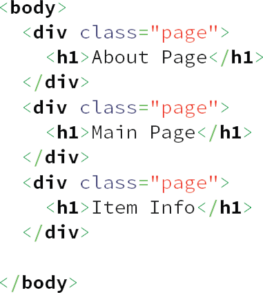
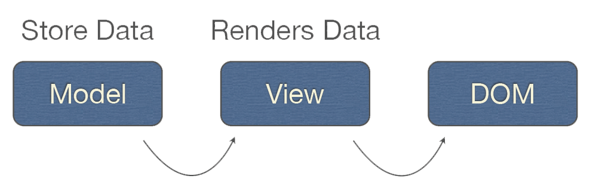

Backbone.js
" Backbone.js gives structure to web applications by providing models with key-value binding and custom events, collections with a rich API of enumerable functions, views with declarative event handling, and connects it all to your existing API over a RESTful JSON interface. "
Created by Jeremy Ashkebas in 2010
What you need to know
Backbone is not a framework !
See marionnette.js
Backbone keeps your code away from the DOM
Only depends on one library
Underscore.js
plus jQuery or Zepto
Super lightweight !
Backbone is based upon the MV* concept

Collections
Collections are containers that gather all the models together
You can handle and manage your models from a Collection
The structure
A page is "just" a div

To navigate in the page, you call routing functions

These functions dynamically change the url of the page without reloading
Web Application structure

The Good
- Well-suited for large client-side applications, offering user services
- Separation of concerns respected
- Single-page applications
- Use whatever you want : it's tailored to your needs !
The Bad
- Not for a website that only shows data
- Single-page apps don't work well with old browsers
- A lot of coding required (or extensive use of plug-ings) -> "No magic"
- Client-code becomes quite "heavy"
And The Ugly
The comparison
GitHub watchers

Growth between 2012 and 2013

Download size
Performance
Animating 100 circles : Backbone and AngularJS fastest, Ember quite slow
Backbone lets you do all the DOM manipulation, whereas AngularJS does it all for you
Community and plug-ins
Backbone community is simply huge, it's the biggest of all JS libraries
A lot of plug-ins
Backbone versus Ember
Backbone is more explicit and less magical
Ember automatically updates its views when data changes
Thanks for your attention !
Created by Jordan Martin, Jonathan Taws, and Léon Mangeat
Taken from Stephanie Kim website